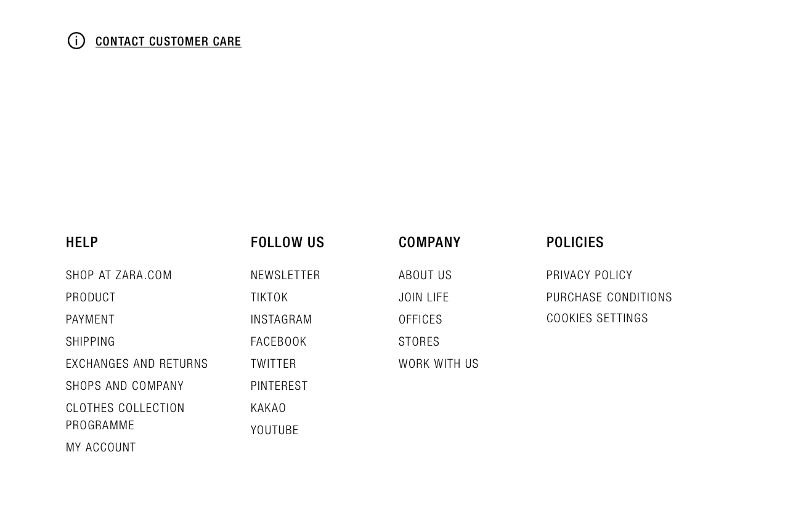
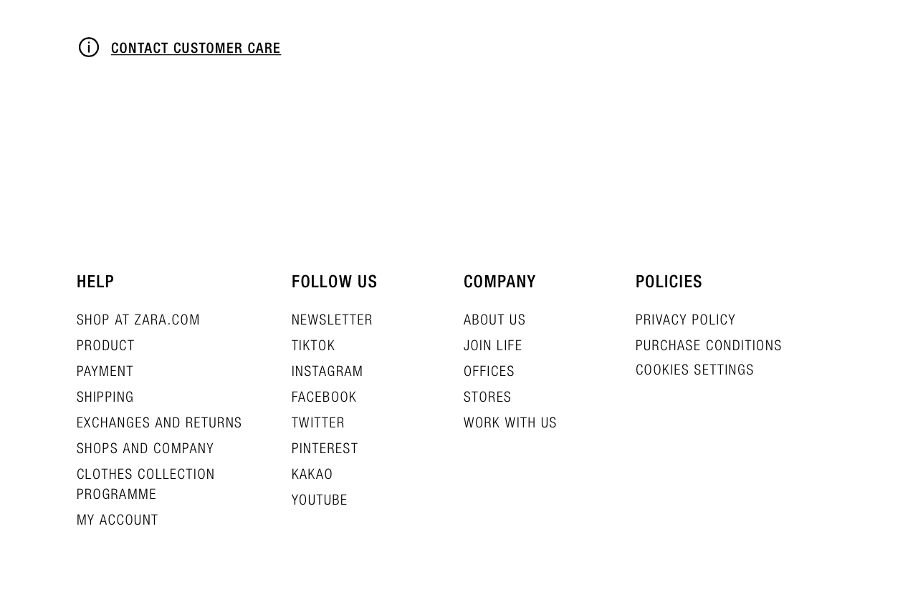

1. Personal Bio 2. E-Business website review
Hello Everyone ! My name is Pauline. Nice to meet you ! First of all, I would like to introduce myself. Things that I like :
My favourite movie is Eternal Sunshine of the Spotless Mind, starring Jim Carrey and Kate Winslet and released in 2004. You can watch the trailer here.
France is a beautiful country with a lot of things to visit, and the food is excellent. The landscapes are wonderful everywhere, either in the North or in the South. I love south Korea as well ! Here are some pictures of my favourite places in France :This is Paris, the capital !
This is called "Les calanques de Marseille". It's really beautiful.
This is Lyon, the third most populated city in France.
I chose to analyze the Zara website. You can find the link of the website here. Table of contents : 1. Presentation 2. Advantages 3. Disadvantages
 But the aesthetic of the website is minimalist and rather pretty.
Also, we can easily find information about the brand :

But the aesthetic of the website is minimalist and rather pretty.
Also, we can easily find information about the brand :

 Besides, the display of the different clothes is not very intuitive.
Indeed, even if it is possible to adjust the number of clothes displayed per row, the initial format is intended to be minimalist and aesthetic,
but eventually it complicates the navigation.
It gives this:
Besides, the display of the different clothes is not very intuitive.
Indeed, even if it is possible to adjust the number of clothes displayed per row, the initial format is intended to be minimalist and aesthetic,
but eventually it complicates the navigation.
It gives this:
 Even if we can switch to this :
Even if we can switch to this :
 Moreover the navigation is not very simple and very sensitive, as soon as the cursor passes over a product, it struggles to change the image and it is slightly buggy.
The clothes are presented in an aesthetic even in an upscale way, so sometimes in my opinion it does not fit perfectly with the customer base.
Indeed, Zara is a fast fashion brand and I think the website should be more appropriate, with direct views and glimpses on the clothes.
I think that the Zara website should be redesigned to make it simpler, without taking away from the aesthetics.
It would even win over an older clientele not used to e-commerce.
Moreover the navigation is not very simple and very sensitive, as soon as the cursor passes over a product, it struggles to change the image and it is slightly buggy.
The clothes are presented in an aesthetic even in an upscale way, so sometimes in my opinion it does not fit perfectly with the customer base.
Indeed, Zara is a fast fashion brand and I think the website should be more appropriate, with direct views and glimpses on the clothes.
I think that the Zara website should be redesigned to make it simpler, without taking away from the aesthetics.
It would even win over an older clientele not used to e-commerce.